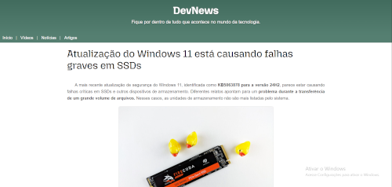
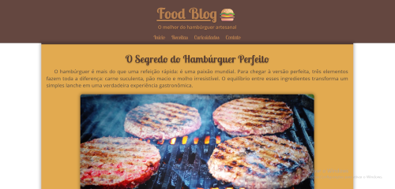
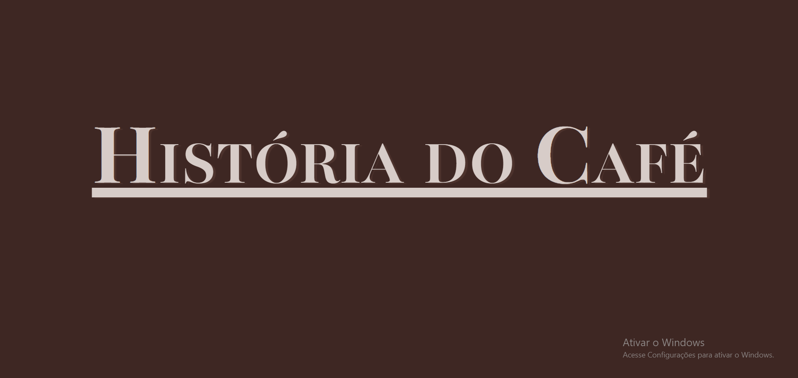

Sobre Mim
Meu nome é Brian, tenho 20 anos e sou natural de Salvador/BA. Sou apaixonado por tecnologia e programação, atualmente estou reconstruindo minha base na área, começando pelo front-end, mas com o foco no back-end, onde quero me especializar e contribuir de forma significativa. Em 2022 estudei Python, mas na época não tinha os recursos necessários para evoluir de forma consistente. Hoje, com mais experiência e dedicação, busco oportunidades que me permitam aplicar meus conhecimentos, enfrentar desafios reais e entender como o mercado de tecnologia funciona na prática. Sou uma pessoa versátil, esforçada e movida por aprendizado constante. Gosto de ambientes desafiadores, onde posso crescer, inovar e contribuir com propósito. Acredito que cada projeto é uma oportunidade de desenvolver habilidades técnicas e pessoais, e estou motivado a evoluir junto com a equipe e com a empresa.
Projetos
Clique em "Iníco" para retornar ao portifólio:
DevNews
DevNews foi um projeto onde utilizei informações reais da web e criei minhas próprias imagens editadas. Nele, pratiquei o uso de listas, menus de navegação, gradientes, manipulação de imagens e técnicas de responsividade. Foi um desafio muito válido, que me permitiu exercitar os conceitos aprendidos de forma independente.
Food Blog
Food Blog foi um projeto desenvolvido para simular um blog de culinária. Nele, trabalhei com estrutura semântica em HTML, listas, tabelas, imagens, variáveis no CSS e estilização com CSS, além de praticar a responsividade. Foi um dos projetos mais desafiadores, principalmente na harmonização das cores, o que me ajudou a desenvolver um olhar mais crítico para design e estética.
História do Café
No projeto sobre a história do café, apliquei uma nova forma de tamanhos que aprendi (utilizando - vh e vw) para tornar mais responsivo. Enfrentei algumas dificuldades para adaptar em telas menores, pois ainda não sei utilizar (media querys).Por fim, apliquei nele o efeito paralaxe com duas imagens, onde me senti bem satisfeito com o resultado visual e aprendizado adquirido.